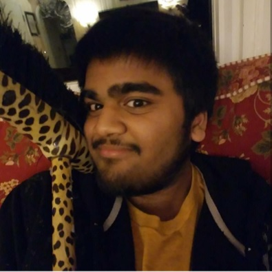

Home |
Our Team |
Team Blog |
Ryan SheehanLead OutreachRyan Sheehan is currently a senior at Strath Haven High School. By bringing his unremarkable programming abilities and impassioned-yet-biased worldview to the table, he hopes to further the group's hegemony. Although the stigmatization surrounding mental health issues has improved immensely in the past few years, he believes that there is still plenty to be done. Just consider the fact that life expectancies rose dramatically when physical hygiene improved noticeably in the 20th century. With a modern day improvement to mental hygiene, why should our quality of life not do the same? |

|

|
Peter FoggoChief Assisstant StafferPeter Foggo attends Strath Haven High School and is a member of the Class of 2017. Mental Health and Mental Illness has grabbed his attention over the last couple of years because he has known too many people who have committed self-harm and who have struggled with depression, particularly in their youth. He is confident that with the appropriate level of education around this issue, we can destigmatize Mental Illness in order to create a healthy environment both in Strath Haven High School and hopefully on a national scale too! Mental Illness is nothing to be ashamed of; in fact, many colleges offer free therapy sessions in an effort to reach out to overly-stressed young adults who are troubled with the task of balancing various components of the collegiate life. |
Zach LeahyLead R&DZach Leahy |

|
Michael TangLead ProductionMichael Tang is a Junior at Strath Haven High School. He has personal experience with mental health and is always willing to help a friend out. He's glad that he can even try to make a difference. Mental health is an issue which was concidered obscene for far too long. Michael wants to see everyone get the help that they need and deserve. Michael has been studying computer science for four years both in and out of school. He is fluent in both Java and is currently studying HTML and CSS, and hopes to study video game design in college. |
Pritish TarafdarLead DesignPritish Tarafdar is the team's designer, and he accordingly works on the all of the design aspects for our website, logo, and potential other interfaces. He attends Strath Haven High School, and he's been doing work in computer design for almost all of his adult life. He is very invested in the project and the issue of mental health is important to him due to the experience he has had with mental health issues with people in his life. He believes that the destigmatization of mental health is a necessity for a modern society. |
 |
©2017 Michael Tang | Philadelphia, PA
Home | Our Team | Team Blog | Resources | Full Activity Log
Contact: MTang@WEMentalHealth.xyz